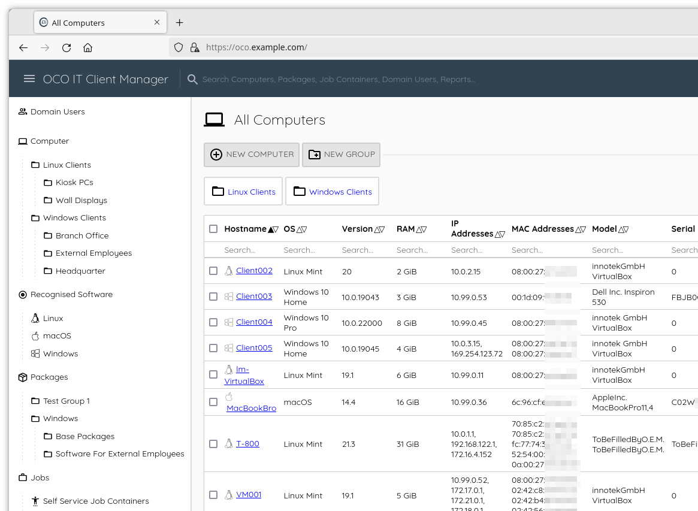
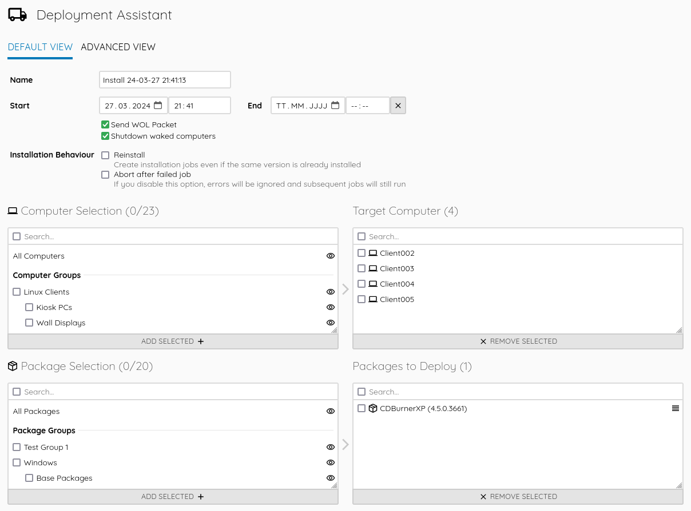
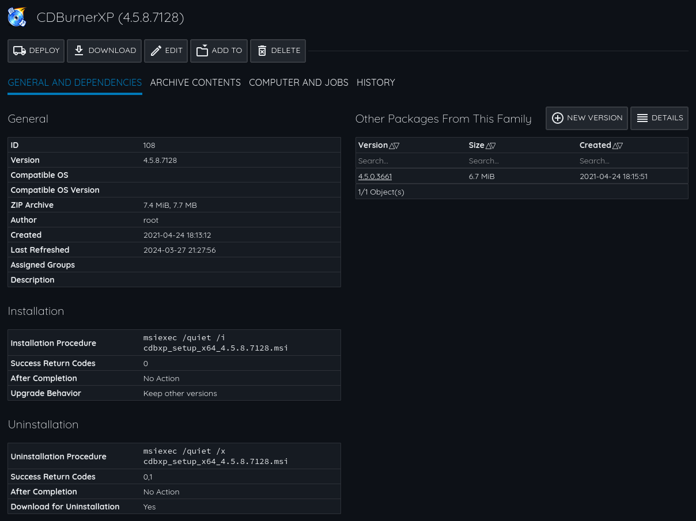
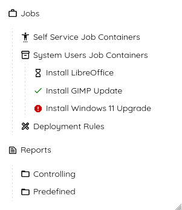

The Open Computer Orchestration (OCO) project enables IT administrators to centrally manage Linux, macOS and Windows machines using a comfortable web interface. It provides software deployment features, a user-computer logon overview, lists software packages installed on each computer ("recognised software") and features a fine-grained permission/role system.

{kind=link}

{kind=link}
These features allow you to roll out any new software or updates (patch management) - just create an OCO package and distribute it to your clients. You can track progress and view the results (exit code and command output) of every software job. Custom reports let you to get even more out of your data.
This project focuses on easy usability (UI/UX), simplicity (assessable code with minimal external dependencies) and performance (you can manage many computers with minimal server resources).

{kind=link}

{kind=link}
As an on premise (self hosted) solution, OCO ensures that only you have the full control over your data and managed computers. Use the power of Open Source, clone the GitHub repo and set up your own OCO server today!
GitHub stars, contributions and feedback is highly appreciated. If you want to improve OCO, e.g. by translating into your native language, don't hesitate to create a pull request on the GitHub repo. If you need help setting up or integrating OCO into your environment, or if you like to commission a new feature development, you can get commercial support directly from the developer. If you like, get in touch for an offer.